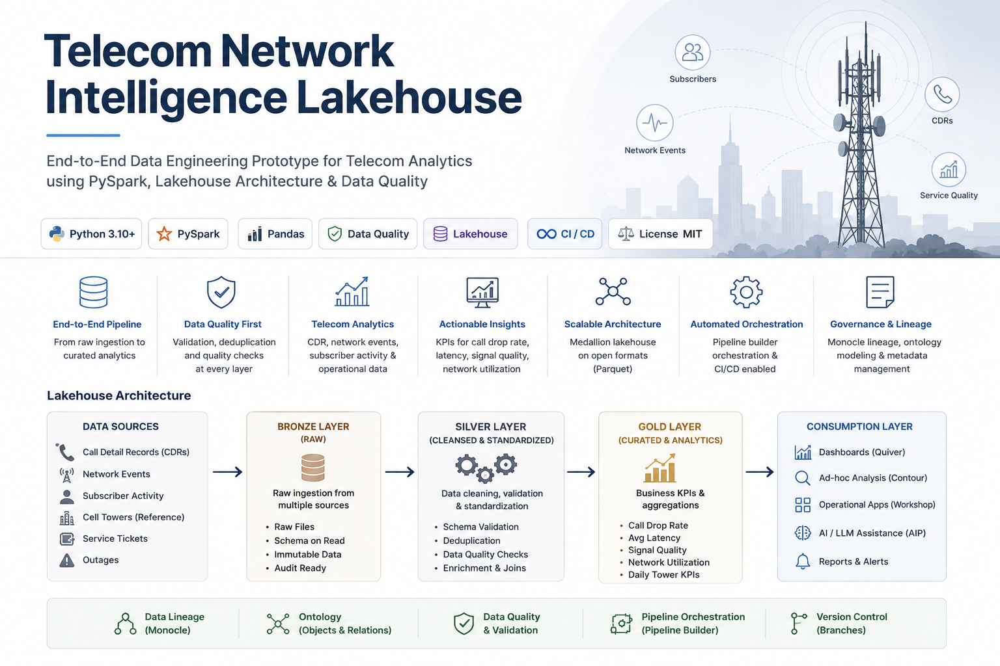

Multi-source ingestion
Integrates synthetic CDRs, network events, subscriber activity, tower reference data, tickets, and outages.
An end-to-end data engineering prototype for processing call detail records, network events, subscriber activity, tower reference data, service tickets, and outages into operational telecom KPIs.

The prototype demonstrates portable telecom data-engineering patterns without reproducing any proprietary production implementation.
Integrates synthetic CDRs, network events, subscriber activity, tower reference data, tickets, and outages.
Validates required files and columns, checks missing values, detects duplicate business keys, and standardizes timestamps.
Generates call-drop, signal-quality, latency, congestion, availability, ticket, and outage KPIs.
The flow moves from synthetic telecom source datasets to governed raw ingestion, validated records, curated KPIs, and business consumption.
Run these commands from the repository root after downloading the project.
python -m venv .venv# Windows
.venv\Scripts\activate
# macOS / Linux
source .venv/bin/activatepip install -r requirements.txtpython src/validate_input_data.pypython src/local_pipeline.pypython src/pyspark_pipeline.pypython src/replace_data.py --source "path/to/new_data"pytest -qThe local pipeline writes business-ready datasets under data/processed/gold/.
| Output | Purpose |
|---|---|
daily_tower_kpis.csv | Tower-level call volume, dropped calls, latency, signal quality, utilization, availability, and degradation metrics. |
ticket_summary.csv | Ticket volume, open issue counts, priority, status, and resolution-time reporting. |
outage_summary.csv | Outage counts, duration, root-cause patterns, and affected subscriber estimates. |
Call-drop analysis, latency monitoring, signal degradation, and service-availability reporting.
Congestion detection, peak utilization analysis, outage impact, and capacity-planning support.
Issue tracking, root-cause investigation, alerting, dashboards, and AI-assisted incident triage.
Portfolio disclaimer: This personal prototype uses synthetic data and common telecom data-engineering patterns. It does not contain proprietary client code, production data, credentials, or confidential implementation details.